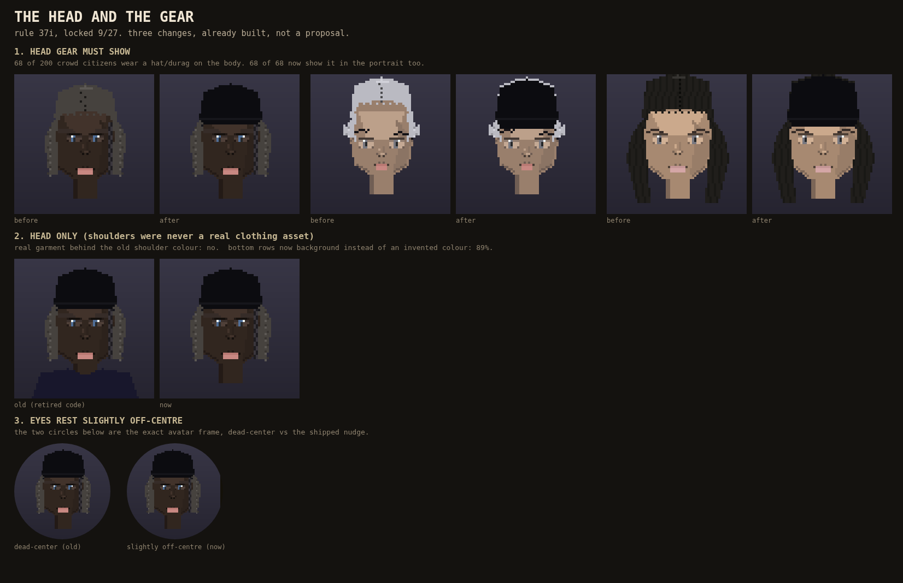

Rule 37i, THE THIRD VOTES, locked 9/27. Three portrait changes, all already shipped: the hat and durag show now, the flat invented shoulder colour is gone (head only), and the whole face sits a couple pixels off the dead centre of its frame instead of dead-on, the same way a candid shot never lands your face exactly in the middle. Nothing here is waiting on a thumb; this card is the proof it happened.
